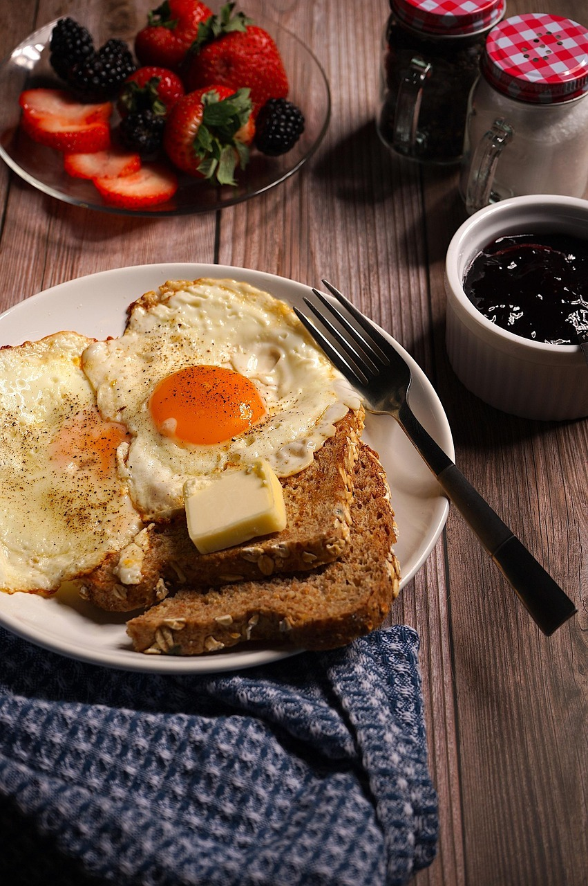

Home
Eggs on toast

This is a quick and simple recipe for making eggs on toast: a simple, hearty meal that will fill you right up!
Ingredients:
- Sliced bread
- Salted butter
- 2 eggs
- Toast two slices of bread in the toaster until golden brown.
- Whilst toasting, add butter to a pan, crack two eggs, and fry until your preferred doneness.
- Butter the toast, and top with those delicious eggs.